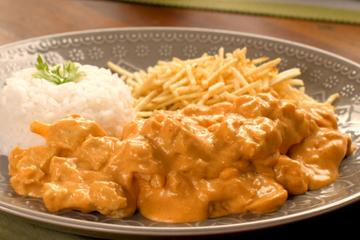
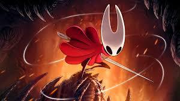
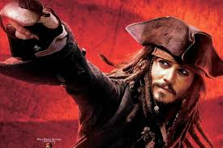

Parte 1 – Minha comida favorita
Estrogonofe de Frango
Minha comida favorita é Strogonoff — gosto especialmente do molho, um equilíbrio entre principalmente ketchup e mostarda.
Parte 2 – Meu hobby/passatempo favorito
Jogar videogame
Meu passatempo favorito é jogar videogame — tanto online quanto offline. Gosto de jogos que desafiam o raciocínio lógico, permitem cooperação com amigos e contam boas histórias. Jogar é uma forma de relaxar, aprender estratégias e me conectar com pessoas.
Parte 3 – Um lugar que quero conhecer
Central Park, Estados Unidos

Quero conhecer Central Park porque é um dos lugares mais bonitos do mundo no período de inverno, na minha opinião. Além disso, o próprio país em que está localizado é repleto de cultura e conhecimento.
Parte 4 – Filme/Série favorito
Piratas do Caribe: No Fim do Mundo
Personagens principais
- Jack Sparrow
- Elizabeth Swann
- William Turner III
Principais atores
- Johnny Depp
- Kei ra Knightley
- Orlando Bloom
Parte 5 – Cantor(a) ou Banda favorita
Nome da Banda: Imagine Dragons

História
Imagine Dragons é uma banda de rock alternativo conhecida por combinar elementos eletrônicos com músicas com refrões fortes e melodias acessíveis. Surgiu no início dos anos 2010 e ganhou destaque mundial com singles que tocaram muito nas rádios.
Músicas
Gosto dessa banda por causa das letras que misturam emoção e energia, além das melodias que funcionam bem em situações de estudo ou momentos de descontração.
- Radioactive
- Believer
- Demons